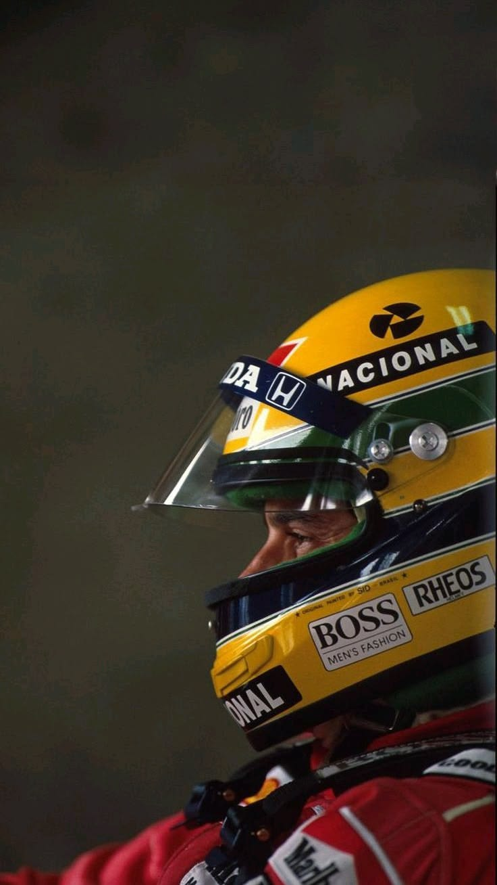
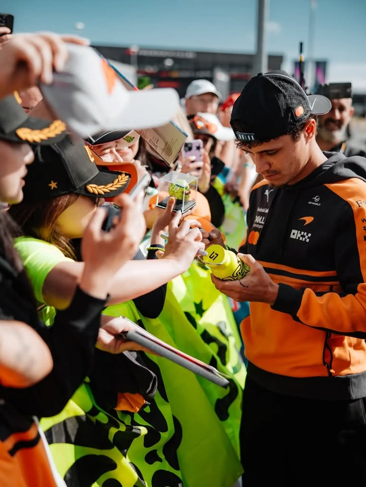

la fórmula 1 no solamente es velocidad si no también estrategia, un equipo no solo se basa en la destreza del piloto sino en las estrategias que cada equipo tiene para ser el mejor. además las estrategias es lo que hace que cada piloto y cada escudería sea distinta a otras ya que las estrategias hacen la diferencia, ya que no siempre el más rápido es el que gana si no quien tiene mejores estrategias para llegar a la meta así mismo pasa en la vida no el más rápido o el mejor es el que llega o el que triunfa sino el que tiene mejor estrategia y quien sabe como afrontar las situaciones más complicadas como en una carrera. Lo importante también es saber cuándo avanzar, cuándo esperar, cómo enfrentar los obstáculos y qué decisiones tomar cuando las cosas no salen como las habíamos planeado.
En nuestra vida también tenemos carreras. Tenemos objetivos, sueños y metas que queremos alcanzar. Muchas veces sentimos que tenemos que llegar primero, que tenemos que ser los mejores o que los demás avanzan más rápido que nosotros. Pero la realidad es que cada persona tiene su propio recorrido y sus propios tiempos. Hay algo que hace especial a este deporte: la rivalidad. Los enfrentamientos entre pilotos y escuderías hacen que cada carrera tenga una historia. Competir contra alguien que tiene el mismo objetivo que vos puede generar presión, pero también puede convertirse en una motivación para mejorar. Sin embargo, la rivalidad no siempre significa tener que superar al otro; a veces también significa superarse a uno mismo.


Y si hablamos de Fórmula 1, no podemos dejar de lado el fanatismo y la pasión. Millones de personas siguen a sus pilotos y equipos favoritos, celebran sus victorias y los acompañan incluso en los momentos difíciles. Porque ser fanático no significa solamente apoyar cuando todo sale bien, sino también seguir creyendo cuando las cosas no salen como esperamos. así mismo nosotros tenemos a nuestro “fans” que son nuestra familia, amigos, compañeros o gente que queremos que nos motivan a seguir y nos apoyan en cada sueño, meta o propósito Por eso, creo que la Fórmula 1 nos deja una enseñanza que va mucho más allá de las pistas: no alcanza con tener velocidad, talento o ganas de ganar. También necesitamos estrategia, paciencia, pasión y la capacidad de adaptarnos cuando las cosas se complican. Porque, al final, la vida no se trata de quién llega primero a la meta, sino de cómo recorrimos el camino para llegar hasta ella.